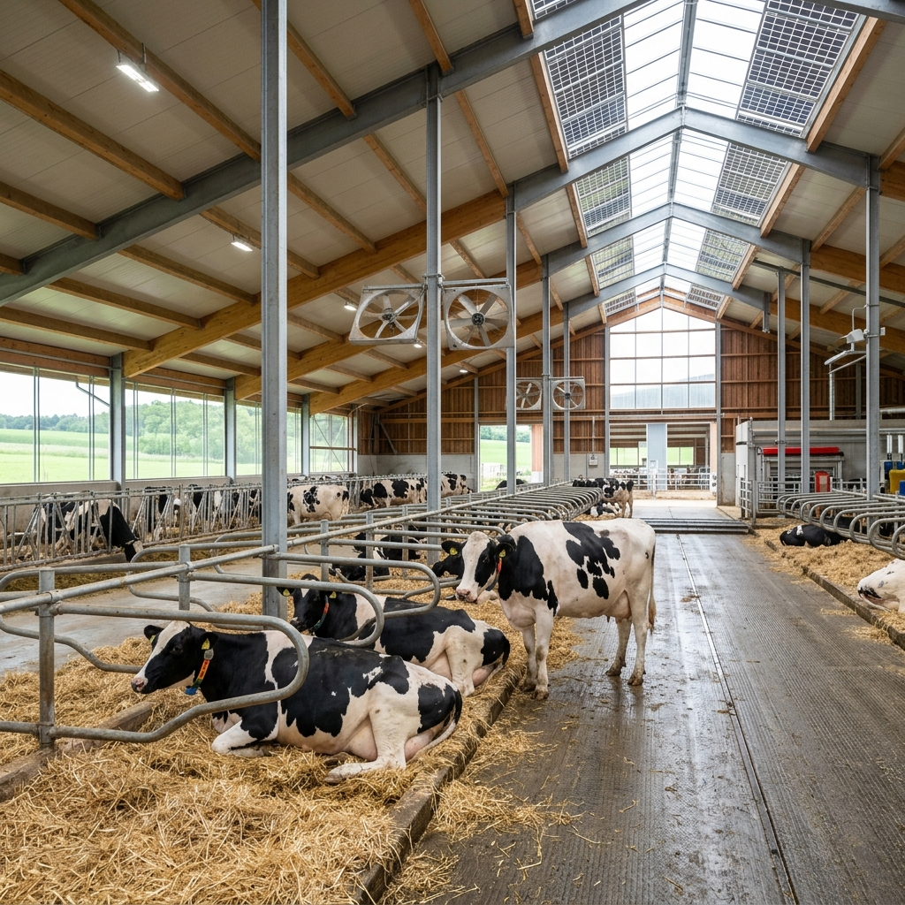
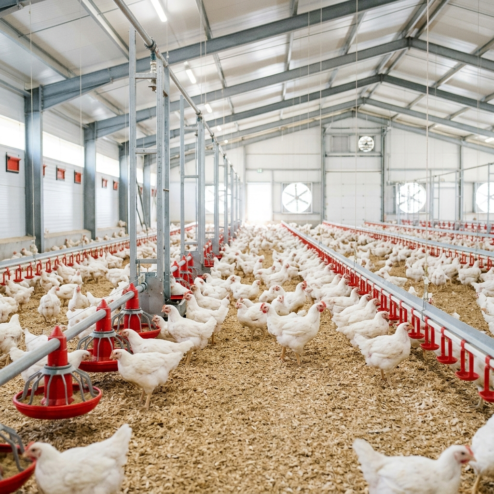
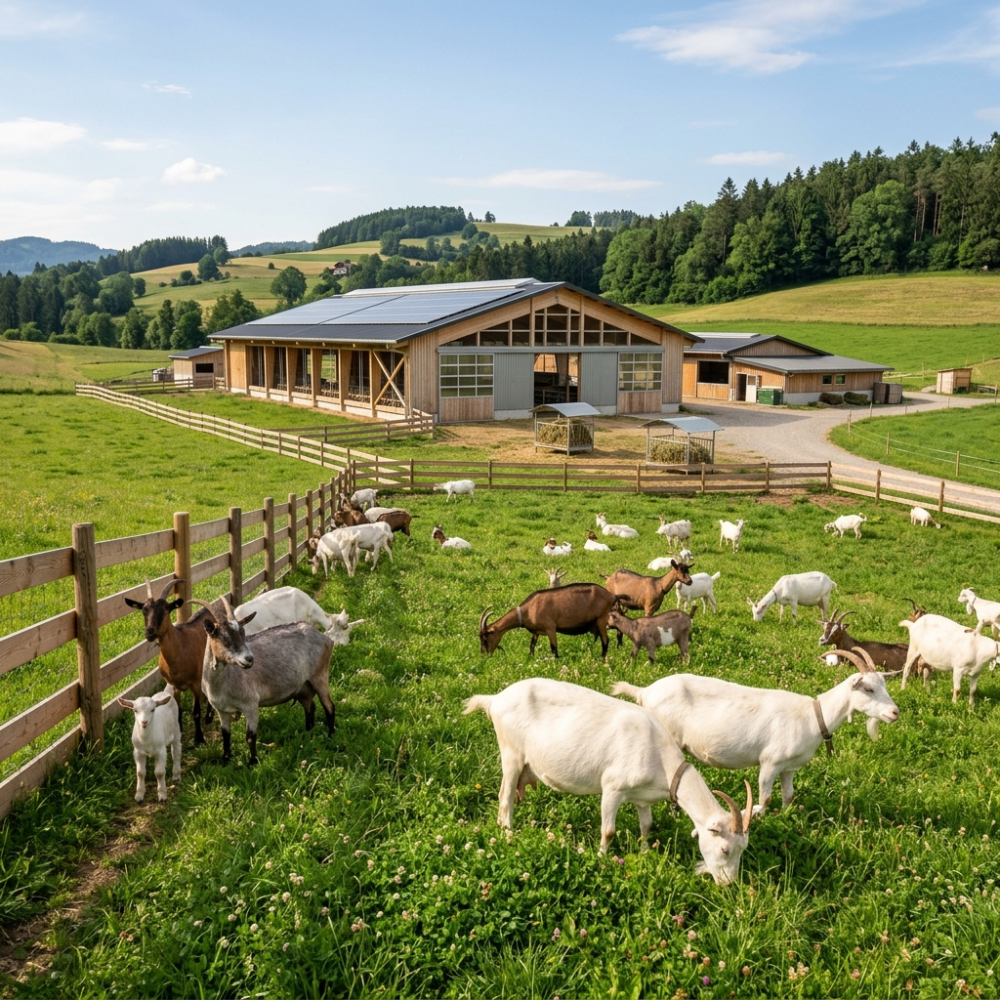
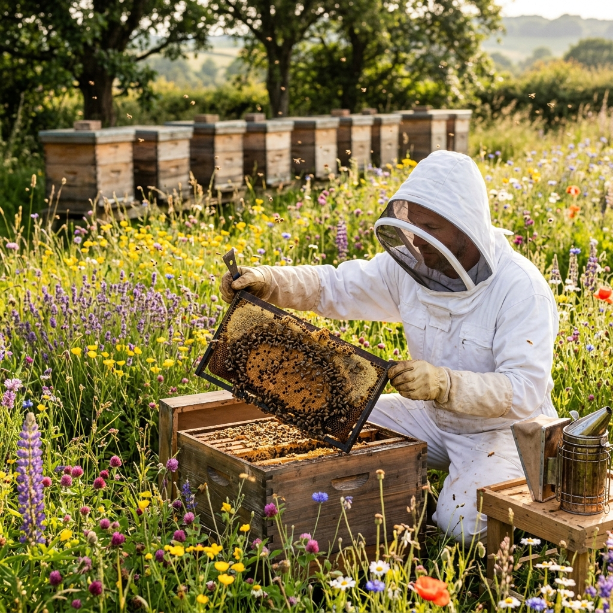
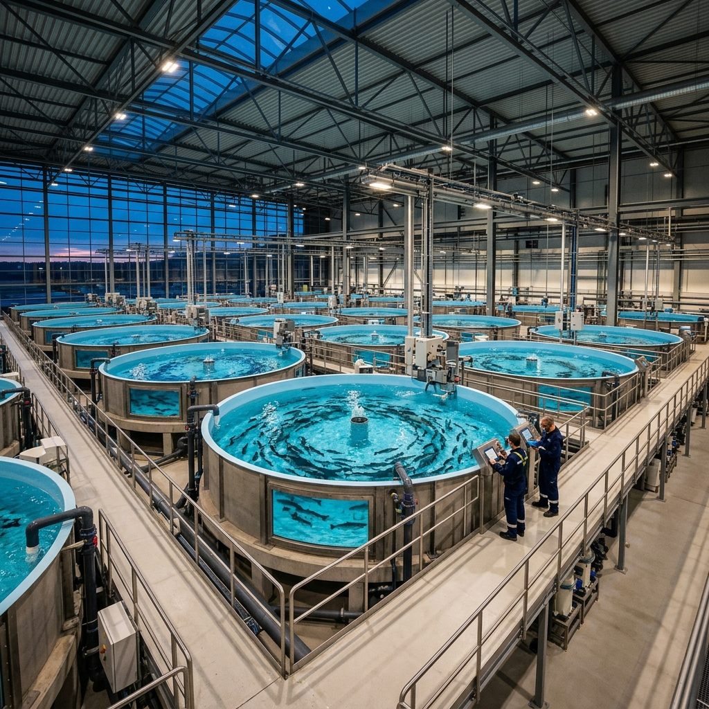
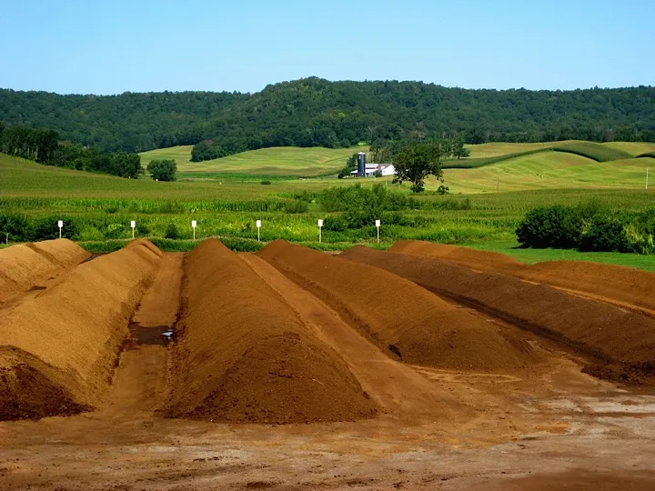

Empowering agriculture through diverse and sustainable solutions.

Our dairy operations focus on A2 certified milk production using traditional native breeds combined with modern health monitoring systems.
View Deep InsightsImplementing IoT-based temperature and feed control to ensure the highest standards of bird welfare and product quality.
Explore Poultry Solutions

Specialized breeding of Sirohi and Barbari breeds for high-quality meat and milk production with 100% natural feed.
Goat Farming DetailsProducing raw, unprocessed honey while supporting local ecosystems through cross-pollination services.
Explore Apiculture

Implementing Bio-floc and Pond culture techniques for high-yield, disease-free fish production in controlled environments.
Aquaculture InsightsConverting farm waste into high-grade vermicompost and liquid organic fertilizers to support chemical-free agriculture.
Learn About Organic Input